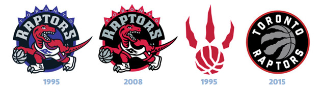

The Toronto Raptors were first established on November 4, 1993, when the NBA, as part of its expansion into Canada, awarded its 28th team to a group led by a Toronto businessman, John Bitove. The Raptors played their first game in 1995. Although, there was problem with the nickname which was previously the Huskies. The original sentiment was to revive the Huskies nickname, but the team realized it would be difficult to create a good logo. Therefore, there was a nationwide contest to help name the team. The final selection, Toronto Raptors, was finally unveiled on May 15, 1994. On May 24, 1994, the team's logo, first general manager, Isiah Thomas, and the team's colours of bright red, purple, black, and silver were revealed. The roster started filling up with players as a result of the expansion draft in 1995. The Raptors did struggle because of being new to the league. They ended their first season with a 21:61 (win:loss) record. It was a bad record compared to teams doing much better like the Chicago Bulls, having a record of 72:10 (win-loss) ratio. Although, throughout the years many changes have occured. The addition/removal of players from the roster as well as the management section (coaches, general managers etc.). Not only did the people change, but things like the arena location. Originally being located at SkyDome, then moving three more times, to finally landing at the Air Canada Centre.
These were the choices for the nickname of the team, later named, Toronto Raptors.
| Name |
|---|
| Beavers |
| T-Rex |
| Dragons |
| Bobcats |
| Tarantulas |
| Grizzlies |
| Terriers |
| Towers |
| Hogs |
| Scorpions |
| Raptors |
FOR MORE ON THE HISTORY OF THE RAPTORS.....CLICK THIS LINK!
